ArborDisk docs
Learn to use the desktop app, the terminal UI and the command line. The screenshots come from ArborDisk on a demo home folder.
Contents
Get started
ArborDisk shows what fills your disk. You can use it as a desktop window, as a terminal UI, or from the command line. It runs on macOS, Windows and Linux. It works offline and needs no account.
Install ArborDisk
Downloads come with the first release. This page tells you how to use ArborDisk after you install it.
One program does everything. On macOS it is ArborDisk.app. In a terminal the command is arbor. The app accepts the same subcommands as arbor.
macOS: give the app, or your terminal, Full Disk Access in System Settings, Privacy & Security. Without it, ArborDisk cannot read folders such as Mail and Messages.
Run your first scan
- Open ArborDisk.
- Pick a drive, your home folder or a recent folder on the start screen.
- Click Choose Folder… or Go to Folder… to pick another folder.
- Wait for the scan card to finish. The map and the table fill in while the scan runs.
ArborDisk scans nothing until you choose. To open the start screen again, press Shift+Cmd+O (Ctrl+Shift+O on Windows and Linux), or click the ArborDisk icon.
To scan the same folder each time ArborDisk opens, turn on Always scan the folder I choose at launch on the start screen. To open a folder from a terminal, type arbor ~/src. A path on the command line skips the start screen.
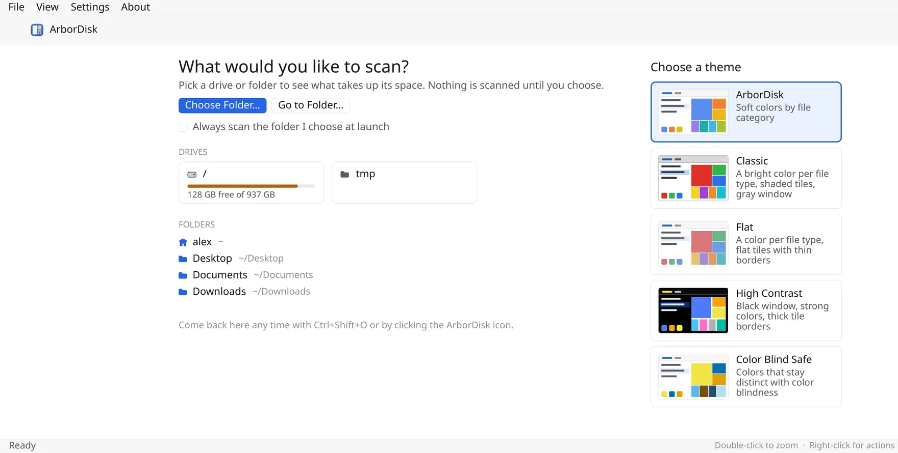
Learn the window
- Toolbar: the used and free space of the drive, Rescan, Record, the filter button, the Cleanup Basket and Settings.
- Navigation bar: Back, Forward, Up, the folder path and a field to search names or type a path.
- Sidebar: Favorites, Locations, Pinned folders and Recent folders.
- Tabs: Tree, Files, Duplicates, Activity and Run diff are free. The Pro tabs follow.
- Table: the items of the folder, largest first.
- File Types panel: space per file type.
- Treemap: each tile is a file. Tile size shows space on disk.
- Status bar: scan results, the scan method and the number of staged items.
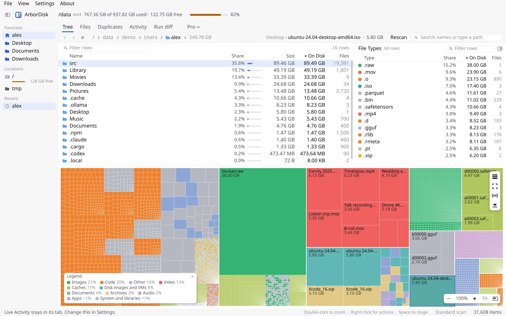
Desktop app
Use the desktop window to find large items, see what changes, and clean up with a confirmation each time.
Scan and move between folders
- To open a folder, double-click its row or tile, or select it and press Enter.
- To go up one folder, press Backspace or Cmd+Up.
- To go back or forward, press Cmd+[ or Cmd+]. Hold or right-click the arrow buttons to see the history.
- To show a folder of the path, click its name. To jump to a sibling folder, open the folder list next to the path.
- To type a path, press Cmd+L (Go to Folder…).
- To pin a folder, right-click it and choose Pin Folder. Pinned folders show in the sidebar and in the Go menu.
- To scan again, press Cmd+R or F5.
- To stop a scan, press Esc. ArborDisk keeps what is on screen.
Right-click any file or folder for more: Open, Copy Path, Copy Name, Zoom Into, Scan This Folder, Show Enclosing Folder, Add to Cleanup Basket and Move to Trash….
The Live label in the navigation bar shows that ArborDisk watches the folder. The view updates when files change.
On Windows and Linux, use Ctrl in place of Cmd for every shortcut on this page.
Read the map
The treemap draws each file as a tile. A large tile is a large file. Folders group their tiles together. Click a tile to select it and open the tile inspector. The inspector shows the size on disk, the share of the view, the file count and the last change. It also has Zoom to Folder, Up, Fit on Map, Add to Basket and Trash….
To hide the map, press F9. To hide the File Types panel, press F8.
Change the map colors
Open View, then Color By, or press M to go to the next mode.
| Mode | What you see |
|---|---|
| File type | Each kind of file has its own color: video, images, code, archives and more. |
| Last modified | Recent files are warm. Old files are cool. |
| Plain | One color for all files. Only the sizes stand out. |
| Recent changes | What grew or shrank since the previous scan. |
| Reclaimable Pro | How much the Pro tabs say you can get back inside each tile. |
The legend in the bottom-left corner explains the colors. Press C to switch between flat tiles and cushion shading.
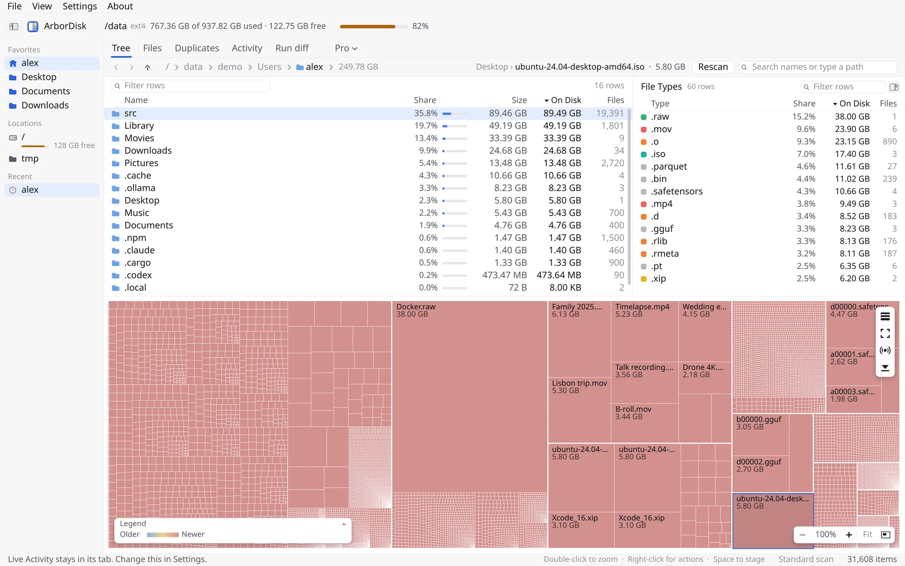
Set the map layers
Press L, or click the Layers button on the map, to open the Layers panel.
- Color by: the color mode.
- Show: Folder borders, Labels, Cushion shading, Pro overlay, Recent-changes glow, Staged items, Pinned folders, Search results, Minimap, Legend and Follow live.
- Detail: how many labels you see (Few, Normal, Many), Hide under (merge small files into one tile per folder), Max depth and Border depth.
Follow live moves the map to folders that grow fast while Live Activity watches.
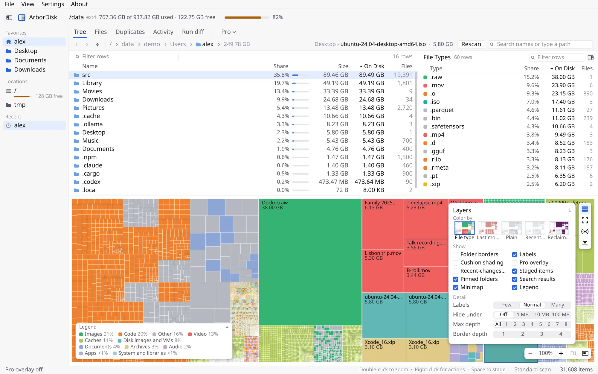
Zoom and pan the map
- Zoom in with Cmd+=, the scroll wheel or a pinch. Zoom goes from 100% to 6400%.
- Zoom out with Cmd+-.
- See the whole map again with Cmd+0.
- Fit the selected item with Cmd+9, or Option-double-click a tile (Alt-double-click on Windows and Linux).
- Pan with Option+arrow keys (Alt+arrow keys), or hold Space and drag.
- Click or drag in the minimap to move the zoomed view. Click the minimap button to show it only while zoomed, always, or never.
Map zoom does not change the folder. To open a folder, double-click it.
Sort, filter and search
Every table sorts by any column. Click a column header to sort. Type in the Filter rows field above a table to show only matching rows.
- Search names: type in the navigation field. ArborDisk lists matches from the whole scan, largest first. Click a result to show it. Press Cmd+F after a click on the map to go to this field.
- Filter bar: press Shift+Cmd+F or F3. Type a name to show only matching items.
- Files tab: lists the largest files anywhere in the folder.
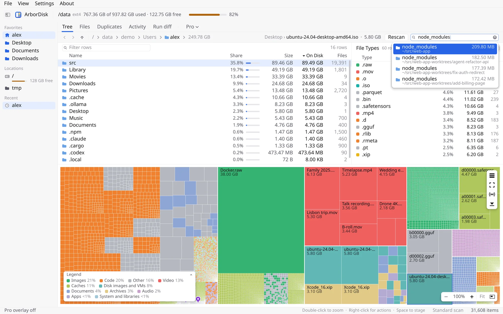
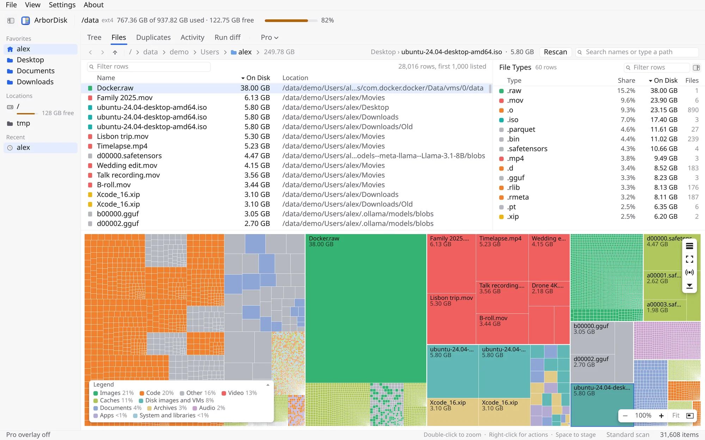
See space by file type
The File Types panel lists each extension with its total size and file count. Right-click a type and choose What Is a .ext File? to learn what made it. For some types, ArborDisk shows a button that opens the right system tool.
Find duplicate files
The Duplicates tab lists groups of files with the same content. ArborDisk checks the size, skips hard links, compares samples and then reads every byte with BLAKE3. Small files are not checked. In each group, one file is the original and the others are copies you can remove.
Right-click a group and choose How Were These Matched? to see each check and the BLAKE3 hash.
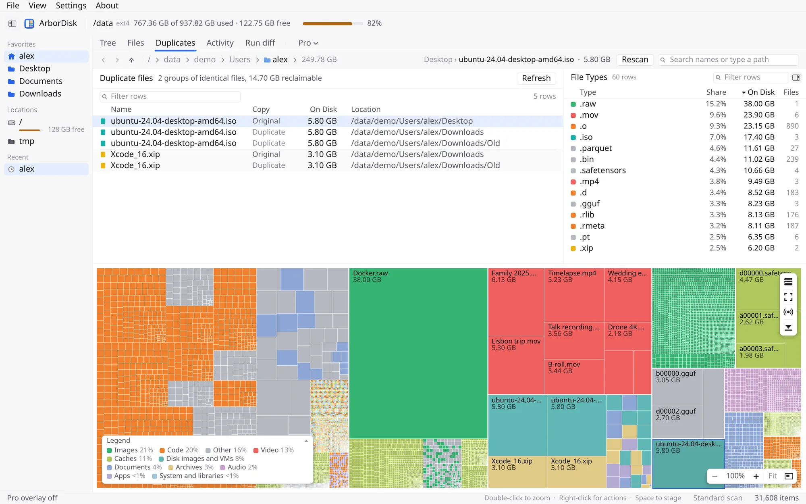
Watch changes live
The Activity tab lists the folders that change while ArborDisk is open. It shows the change in size, the files added, removed and changed, and the time of the last change.
- Choose a time range: Since opened, 5 min, 15 min or 1 hour.
- Group by Folder or by Workspace. A workspace is a git repository or worktree. ArborDisk names the likely agent, such as Claude Code or Codex.
- The header shows the free space and, when the disk fills, the time until it is full.
- Right-click a folder and choose Show Changes… to see the files that changed Pro.
In Settings, Live Activity set to Switch on changes opens this tab when files change.
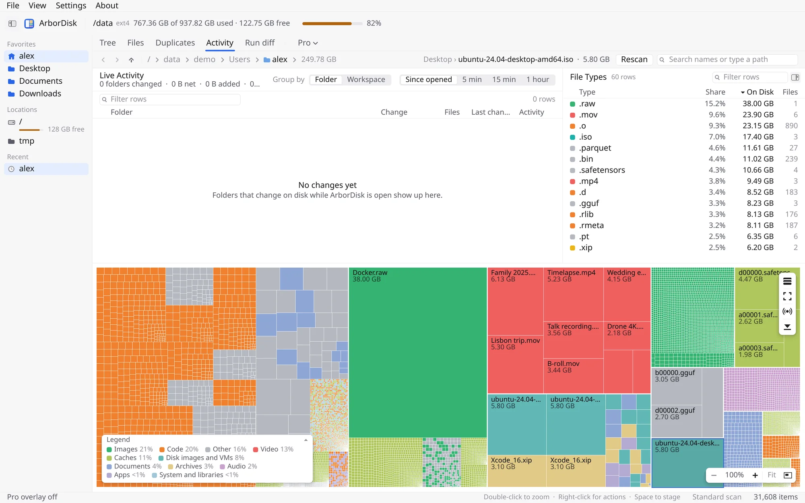
Record what a run changes
Record an agent run, a build or any job. ArborDisk then shows what it changed on disk.
- Click Record in the toolbar, or press Shift+Cmd+M.
- Run your job.
- Click Stop, or press Shift+Cmd+M again.
- Open the Run diff tab and click the run.
The run shows the net change on disk, split into Repo, Caches, Temp, Docker and Other. It also shows the folders that grew or shrank most, the free space before and after, and what the run left behind: new temp folders, caches, worktrees and Docker images.
- Turn on Live log to see the exact changes Live Activity recorded during the run.
- Click Export JSON or Export Markdown. ArborDisk copies the path of the file.
- In Settings, Record agent runs records a run for each coding agent session that starts in the shown folder. It is on by default.
From a terminal, use arbor mark. See Record runs with arbor mark.
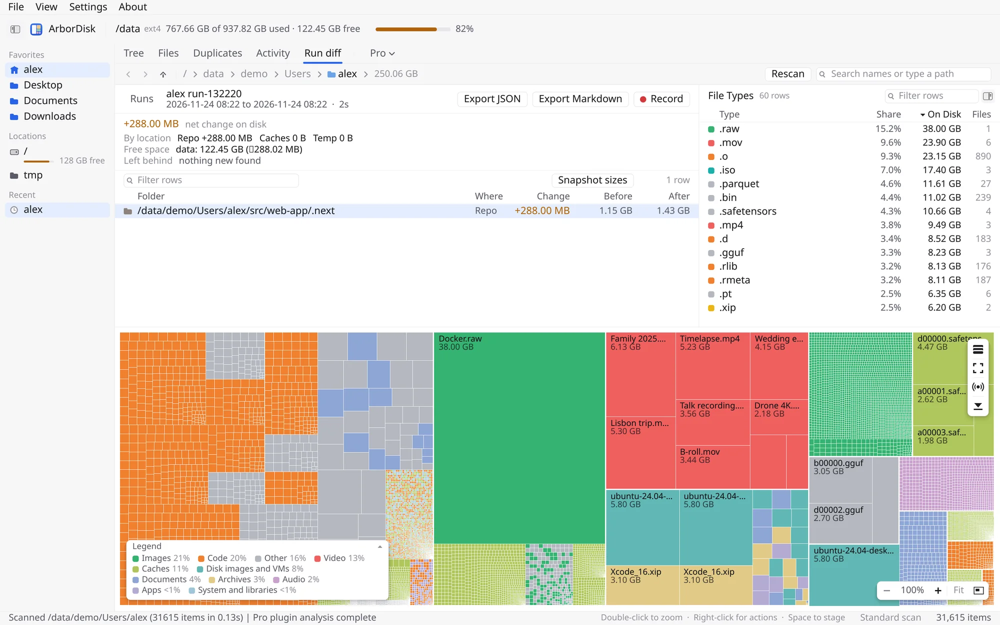
Free up space
Choose File, then Free Up Space…. You can also click Free Up Space… on a low-space alert, or in the tray or menu bar item.
- Read the list. ArborDisk ranks what you can clean up on the drive.
- Select the rows you want.
- Read the estimate. It shows the space you get back at once, and the time that space buys.
- Click the action of a row: Clean Up…, Move to Bin…, Reclaim… or X-Ray….
- Confirm each action.
The free list has large temporary files and items that recorded runs left behind. ArborDisk Pro adds build output of stale worktrees, AI and package caches, and container disks.
Items moved to the Trash or Recycle Bin still use space until you empty it. Container engines on another disk show under On other disks and do not count toward the total.
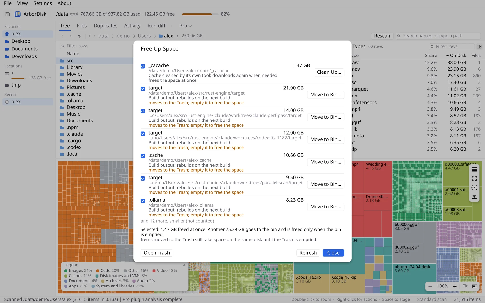
Move items to the Trash
ArborDisk never removes a file without your confirmation. Use the Cleanup Basket to collect items first.
- Select an item and press Space to add it to the basket.
- Press B to open the basket.
- Check the items and their total size.
- Click Move to Trash (on Windows, Move to Recycle Bin).
- Confirm. Press Esc to stop after the current item.
To move one item at once, select it and press Cmd+Delete, then confirm.
To delete the basket for good, click Delete Permanently… or press Shift+Delete. You must click the button in the confirmation. Enter does not confirm a permanent delete.
ArborDisk refuses system and user folders, and the scanned folder itself. Items that fail stay in the basket.
Empty the Trash on Linux
On Linux, the Trash keeps items on the same disk until you empty it. Nothing empties it for you.
arbor free-upshows how much your Trash holds.arbor free-up --empty-trashshows what it frees, asks[y/N]and then deletes the contents of the Trash for good.- In the terminal UI, the Actions menu (a) has Empty Trash.
Linux: ArborDisk uses gio trash when it works. On a server without gio, it moves the item into the Trash folders of the freedesktop.org specification. It only renames within one file system. It refuses an item that would need a copy.
Get disk alerts in the window
While a folder is open, ArborDisk watches its drive. It shows a banner when one of these happens:
| Alert | Default level |
|---|---|
| Low free space | Under 5 GB free |
| Filling up | Full within 30 minutes at the current rate |
| Runaway writes | One workspace grows over 2 GB/min for 2 minutes |
| Fast-growing folder | One folder grows over 10 GB in 10 minutes |
Each banner has Show, Snooze 1 h, Settings and Dismiss. Snooze 1 h holds all disk alerts for one hour. Change the levels in Settings, Alerts & Activity. Click a value to go to the next step.
Keep watching keeps the alerts running after you close the window. Open the window again from the tray icon or the menu bar item. Quit from there.
System notifications: on macOS, turn on System notifications in Settings. macOS asks for permission at that time. This works only in ArborDisk.app. On Windows, alerts show as notifications of the tray icon. On Linux, the window shows the banner only. The tray icon and menu bar item are on macOS and Windows.
Watch more folders
Live Activity can also watch folders outside the scan, such as caches and temp folders. ArborDisk measures them in the background and does not add them to the map.
- Open Settings, then Alerts & Activity.
- Click the Also watch value.
- Click Add Folder…, or click Add Agent Hot Spots to add the usual cache and temp folders.
- Click Done.
Pause an agent from the window
When a coding agent fills the disk, you can freeze it. Pausing stops the agent and everything it started. Nothing ends and no work is lost.
- Click Pause on the alert banner, or right-click the workspace in the Activity tab.
- Read the list of processes.
- Click Pause.
- Click Resume on the banner or in the Activity row menu when you want the agent to continue.
ArborDisk resumes the agent when it quits. If ArborDisk closes unexpectedly, open it again to resume the agent. A long pause can make network requests of the agent time out.
In Settings, Auto-pause agent pauses the agent of the fastest-growing workspace when the disk would be full within the Filling up time. It is off by default.
Change your settings
Press Cmd+,, or click Settings in the toolbar. Click a value to change it. Click Save to keep the changes or Cancel to drop them.
| Section | Settings |
|---|---|
| General | Appearance, Color theme, Cushion shading, Treemap labels, Saved scans, Folder at launch. On macOS also Keep watching. |
| Windows | Run as administrator, Keep watching. Windows only. |
| Alerts & Activity | Live Activity, Disk alerts, System notifications, Runaway writes, Fast-growing folder, Filling up, Low free space, Record agent runs, Auto-pause agent, Also watch. |
| AI Agents | AI agents (Connect AI Agents…), Transcript secret scan. |
| License | License status, Enter License…, Deactivate. |
Saved scans keeps the names and sizes of a scan on this computer. The next time, the folder opens at once and refreshes in the background. Click Clear Saved Scans to remove them.
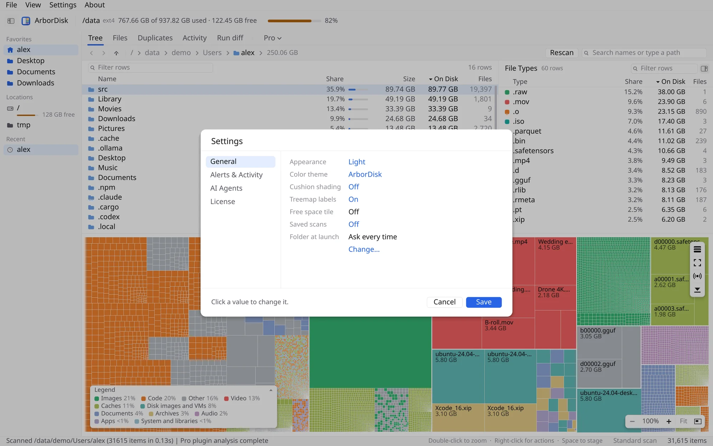
Choose colors and appearance
Open View (or Settings on Windows and Linux), then Color Theme:
- ArborDisk: soft colors by file category.
- Classic: a bright color per file type, shaded tiles, gray window.
- Flat: a color per file type, flat tiles with thin borders.
- High Contrast: black window, strong colors, thick tile borders.
- Color Blind Safe: colors that stay distinct with color blindness.
Set Appearance to System, Light or Dark. The environment variable ARBOR_THEME overrides this setting.
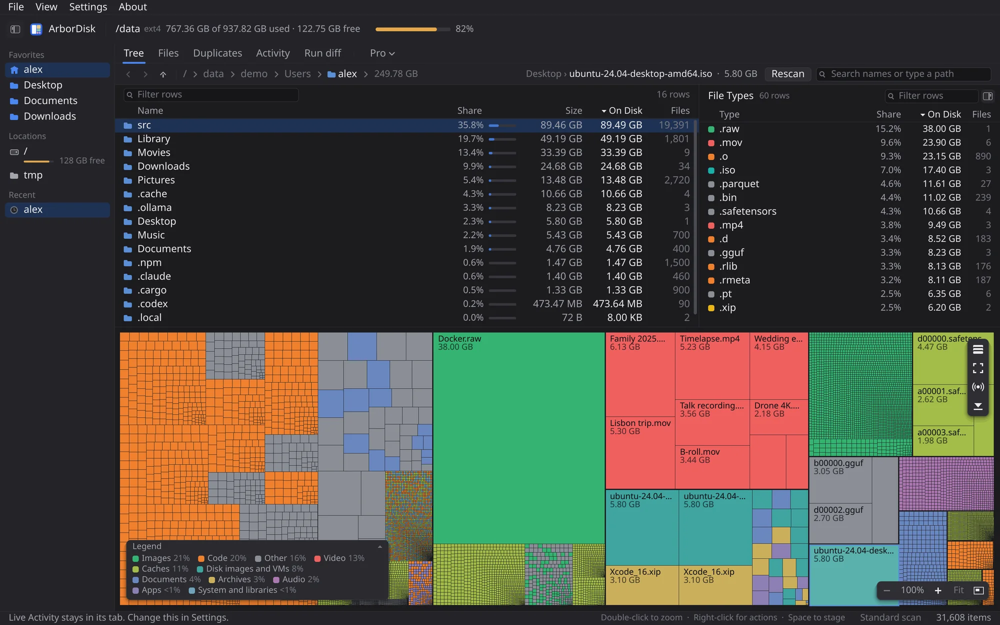
Use keyboard shortcuts
Single-letter keys work when no text field has focus.
| Action | macOS | Windows and Linux |
|---|---|---|
| Open Folder | Cmd+O | Ctrl+O |
| Start screen (Choose Location) | Shift+Cmd+O | Ctrl+Shift+O |
| Go to Folder | Cmd+L | Ctrl+L |
| Rescan | Cmd+R, R, F5 | Ctrl+R, R, F5 |
| Start or stop recording | Shift+Cmd+M | Ctrl+Shift+M |
| Copy Path | Option+Cmd+C | Ctrl+Alt+C |
| Find | Cmd+F | Ctrl+F |
| Filter bar | Shift+Cmd+F, F, F3 | Ctrl+Shift+F, F, F3 |
| Settings | Cmd+, | Ctrl+, |
| Show or hide the sidebar | Ctrl+Cmd+S | View menu, Locations |
| Back, Forward | Cmd+[, Cmd+] | Ctrl+[, Ctrl+] |
| Up one folder | Cmd+Up, Backspace | Ctrl+Up, Backspace |
| Home folder | Shift+Cmd+H | Ctrl+Shift+H |
| Open the selected item | Enter, Cmd+Down | Enter, Ctrl+Down |
| Move the selection | Up, Down, j, k | Up, Down, j, k |
| Next tab | Tab | Tab |
| Go to a tab | 1 to 9, 0 for AI Caches | 1 to 9, 0 for AI Caches |
| Zoom in, out | Cmd+=, Cmd+- | Ctrl+=, Ctrl+- |
| Actual size, zoom to selection | Cmd+0, Cmd+9 | Ctrl+0, Ctrl+9 |
| Pan the zoomed map | Option+arrows, Space+drag | Alt+arrows, Space+drag |
| Next color mode | M | M |
| Cushion shading | C | C |
| Pro overlay | P | P |
| Layers panel | L | L |
| File Types panel, treemap | F8, F9 | F8, F9 |
| Add to or remove from the basket | Space | Space |
| Open the Cleanup Basket | B | B |
| Move to Trash (asks first) | Cmd+Delete | Ctrl+Backspace, Ctrl+Delete |
| Delete the basket permanently (asks first) | Shift+Fn+Delete | Shift+Delete |
| Cancel a scan, close a panel, reset zoom | Esc | Esc |
| Open the menu bar | F10 or Alt |
Tabs 1 to 9 are Tree, Files, Duplicates, Worktrees, Containers, CoW Dedup, Compressor, Security and Snapshot Diff.
Scan faster on Windows
On a local NTFS drive, ArborDisk can read the master file table. This is much faster than a visit to each folder. Windows lets only an administrator read it.
- On the start screen, click Scan as Administrator. Windows asks once, then the window opens again with administrator rights.
- Turn on Always run as administrator on the start screen or in Settings. Windows then asks each time ArborDisk opens.
- During a slow scan, click Restart as Administrator on the scanning card.
The status bar shows the scan method: Fast NTFS scan, Standard scan or Saved scan. With saved scans on, ArborDisk can update a saved NTFS scan from the NTFS change journal. Rescan reads the whole drive again.
Windows: exFAT, FAT, network and SUBST drives always use the folder-by-folder scan. For the terminal UI and the command line, start them from an elevated terminal. They never ask for elevation. For arbor mcp, the agent that starts it must run elevated.
Pro tabs
ArborDisk Pro adds eight tabs, the reclaimable overlay on the map, What's Using This? and the Pro agent tools. Each Pro tab analyzes the scanned folder in the background. Click Analyze or Run again to start it again. Cancel one tab and the other tabs keep running.
Every action asks first and lists what it changes. A Pro tab without a license shows Requires ArborDisk Pro and an Activate… button. See Activate ArborDisk Pro.
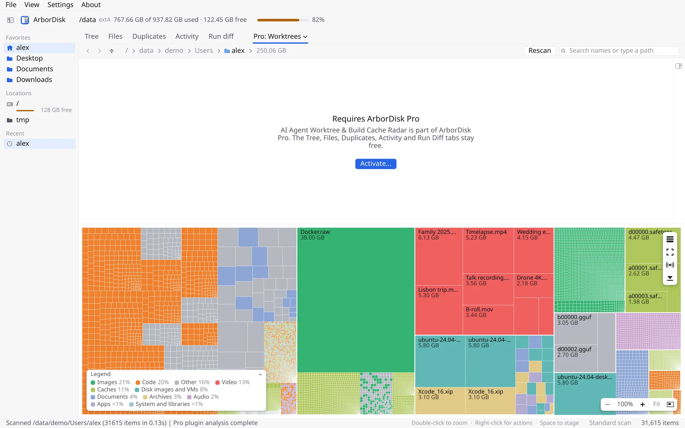
Clean up worktrees and build output Pro
The Worktrees tab lists git worktrees, build output (such as target/, node_modules and virtual environments) and leftovers of removed apps.
For each git worktree, you see the branch, commits ahead and behind, uncommitted changes, the pull request, the last activity and a status. The status tells you if the worktree is safe to remove, and why.
- Remove Worktree…: runs
git worktree remove. It never forces. - Remove Worktree and Merged Branch…: also deletes the merged branch.
- Prune Stale Worktree Records…: removes records of worktrees whose folder is gone.
- Clean Caches: moves build output to the Trash. The next build makes it again.
- Share Files: makes identical dependency files in
node_modulesandsite-packagesshare storage. macOS only.
The Build sharing advice panel shows how worktrees of one repository can share build output. Click Copy Instructions to copy the steps. ArborDisk changes no setting for you.
The pull request column is empty by default. To fill it, install the GitHub CLI (gh), sign in, and set ARBOR_WORKTREE_GH=1. ArborDisk then asks GitHub for the pull requests of clean worktrees.
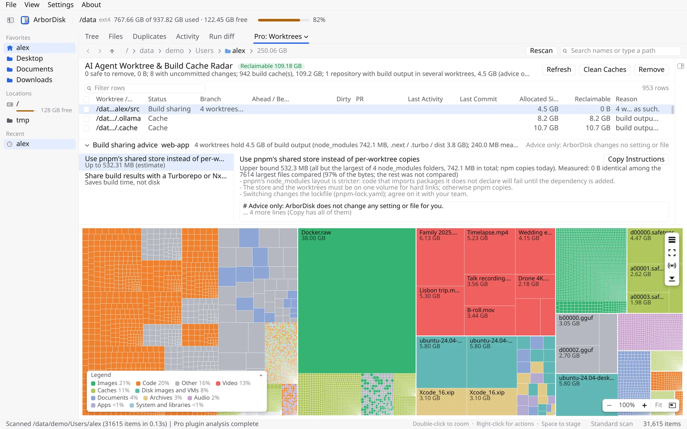
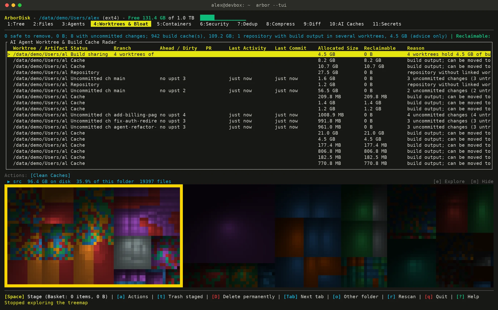
Look inside containers and VM disks Pro
The Containers tab lists container engines and VM disk images: Docker Desktop, OrbStack, Colima, Podman and WSL. On Linux it also lists Docker Engine and Podman without a VM, with the disk that holds their data.
- Select a row.
- Click X-Ray, or right-click and choose X-Ray: Look Inside This Image.
- Read the breakdown: images, containers, volumes and build cache, with what you can reclaim.
- Choose a cleanup next to Reclaim:.
- Read the list of what goes, then confirm.
The cleanups are Build Cache, Dangling Images, Stopped Containers, Unused Images, Unused Volumes and Compact. Build cache means cache no build used in the last 24 hours. Unused Volumes needs a second confirmation. For an engine on Linux, volumes are always You Decide: ArborDisk never removes them. After a cleanup, ArborDisk measures again. Click Re-measure to measure at any time.
On Windows, Compact Disk… makes a WSL or Docker Desktop disk file smaller. Deleting files inside WSL does not shrink the file. Compacting shuts down WSL, Docker Desktop and everything in them, and needs administrator approval.
Set ARBOR_NATIVE_ENGINES=0 to stop the tab from asking Docker Engine and Podman on Linux. The engine commands that read are read-only.
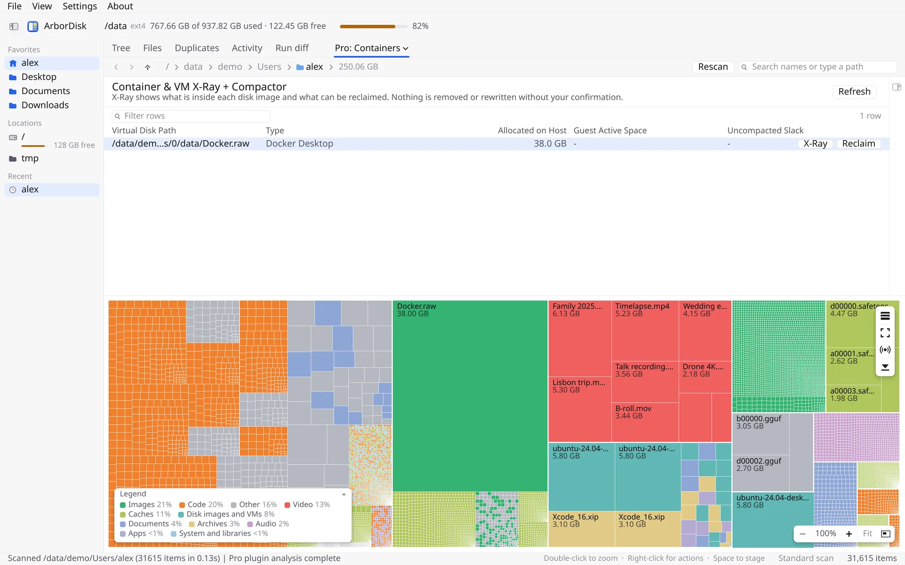
Share storage between duplicates Pro
The CoW Dedup tab lists duplicate files and the space you waste on copies. ArborDisk verifies every group with BLAKE3.
On macOS, Deduplicate via Copy-on-Write Clone replaces each copy with a clone of the original. Both files stay, but share storage. ArborDisk checks the content again before the swap, keeps the file metadata, and skips files that a program has open for writing.
Copy-on-write cloning works on macOS only. On Windows and Linux the tab lists the duplicates only.
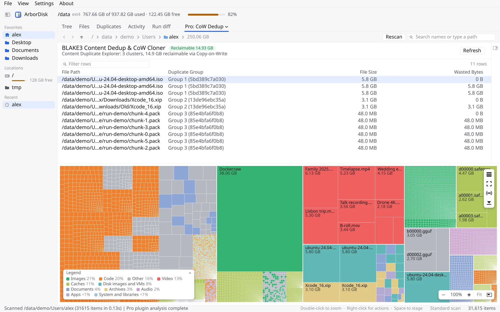
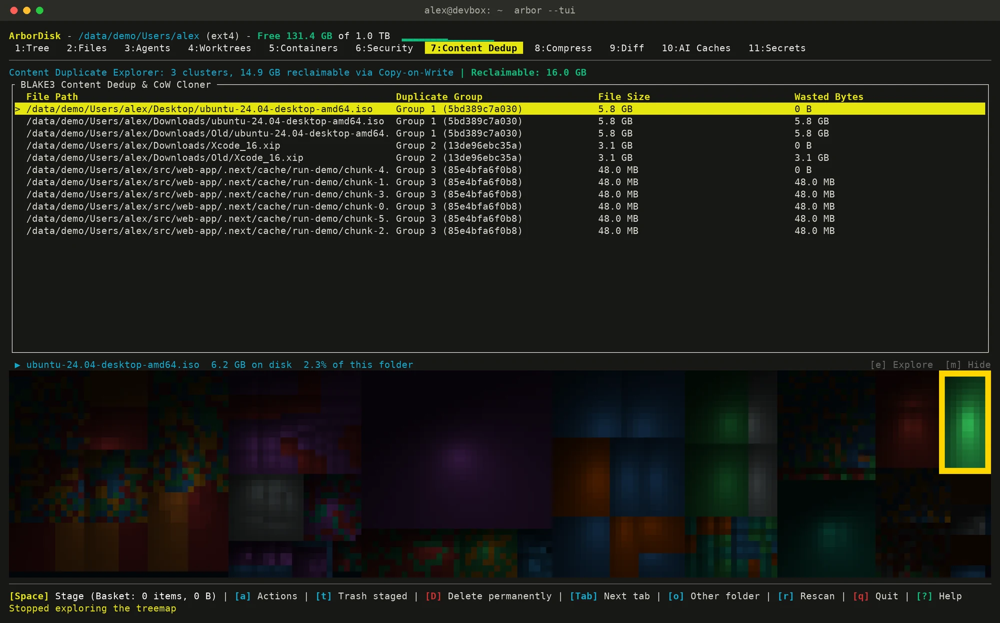
Find files worth compressing Pro
The Compressor tab lists files that would take less space if compressed, with an estimate of the savings. ArborDisk reads a small sample of each file.
This tab is analysis only. It changes no file.
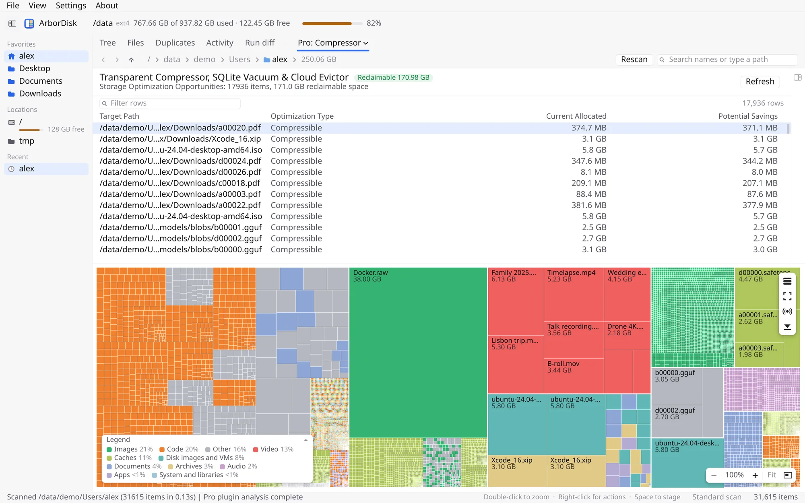
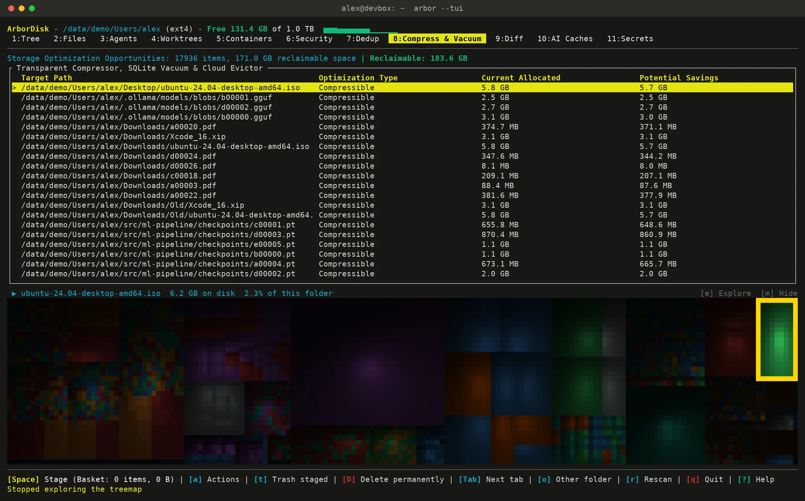
Check file permissions Pro
The Security tab lists sensitive files that other users on this computer can read, such as keys and credential files.
On macOS and Linux, Harden Permissions (chmod 0600) makes a file readable by you only. ArborDisk changes regular files only and records the previous mode.
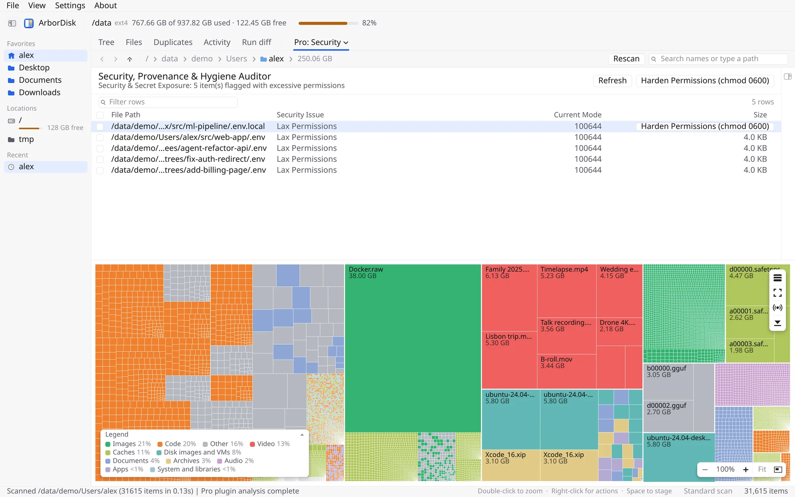
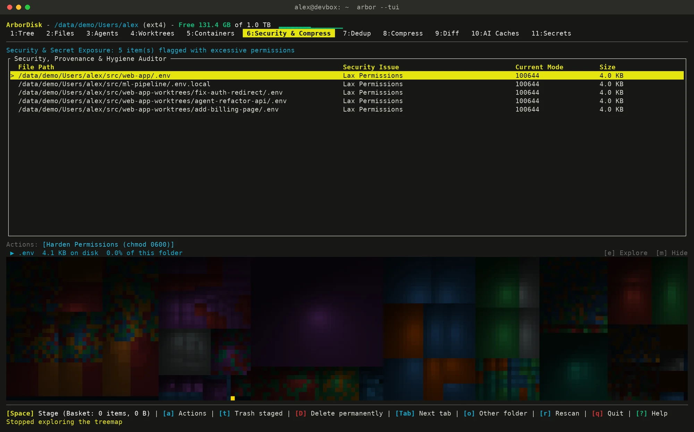
Compare with the previous scan Pro
The Snapshot Diff tab compares the scan with the previous scan of the same folder. It lists what grew, what shrank and what is new, largest growth first.
- Scan a folder.
- Work, or let an agent work.
- Press Cmd+R to scan again.
- Open the Snapshot Diff tab.
Click Export Snapshot Diff Report to save the list.
ArborDisk keeps the previous scan in memory while it runs. Quit ArborDisk and the comparison starts again. A folder with more than 500,000 items gets no comparison. The Recent changes color mode uses the same comparison.
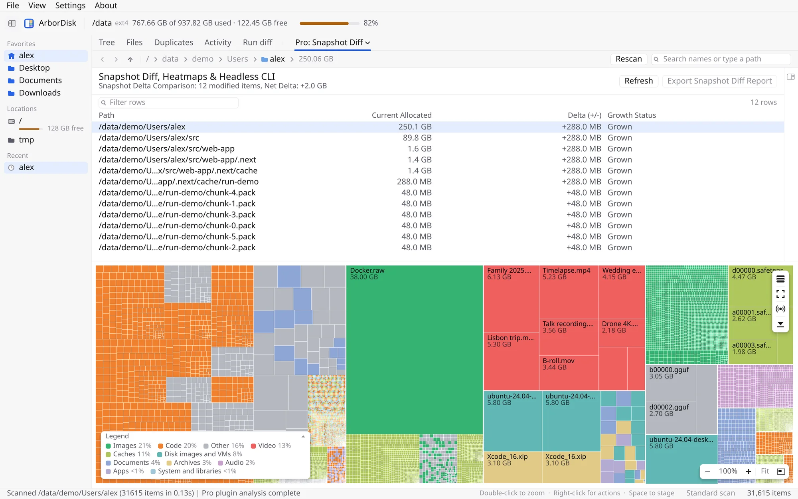
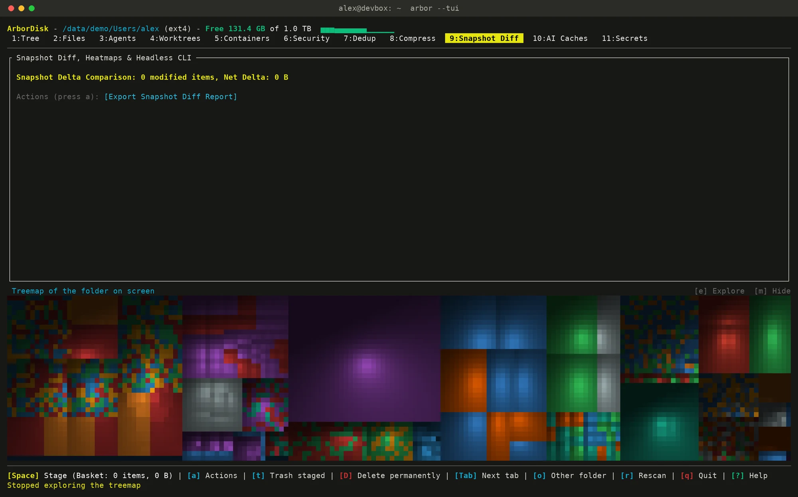
Clean up AI caches and models Pro
The AI Caches tab (key 0) lists model stores, package and tool caches, and agent session data. It knows Hugging Face, Ollama, LM Studio, GGUF, MLX, PyTorch Hub and Whisper. For Ollama, it finds blobs that no model uses. For session data, it reads metadata only.
- Run the tool's own cleanup command.
- Move a model or cache entry to the Trash.
- Clear a whole cache, or move old sessions to the Trash. Both ask twice.
- On macOS, make identical model files of different tools share storage.
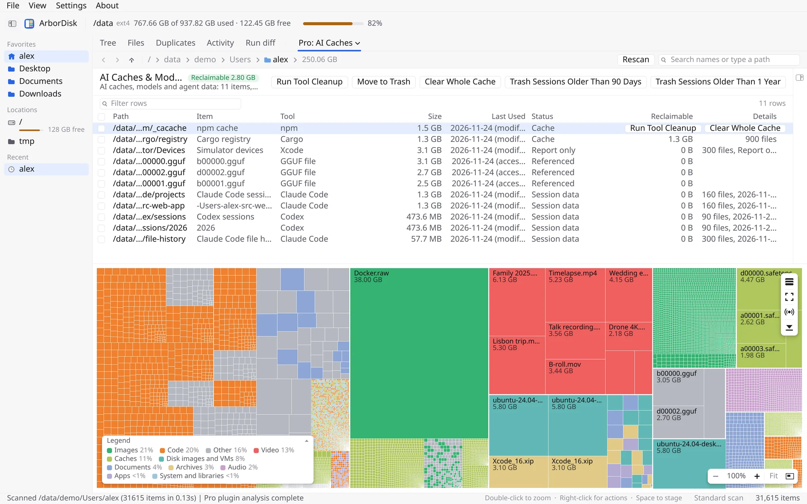
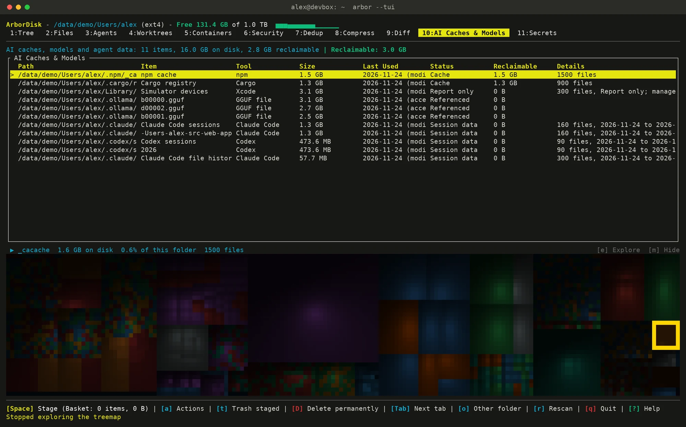
Find copied secrets Pro
The Secrets tab finds secret files that agents copied across worktrees: .env files, private keys, .npmrc, .netrc, cloud credentials and kubeconfig files. It only flags. It never changes, deletes or uploads a file, and it never shows a secret value.
| Severity | Meaning |
|---|---|
| High | Tracked in git. |
| Elevated | Copied in 3 or more worktrees, or not ignored by git. |
| Moderate | In agent transcripts, or copied. |
| Low | One copy that git ignores. |
Select a row to see what ArborDisk found, where, and what to do. Use Open Containing Folder or Copy Path to act on it yourself.
To also scan agent transcripts, click Turn On… in the tab, or set Transcript secret scan in Settings, AI Agents. It is off by default. ArborDisk reads session files on this computer only.
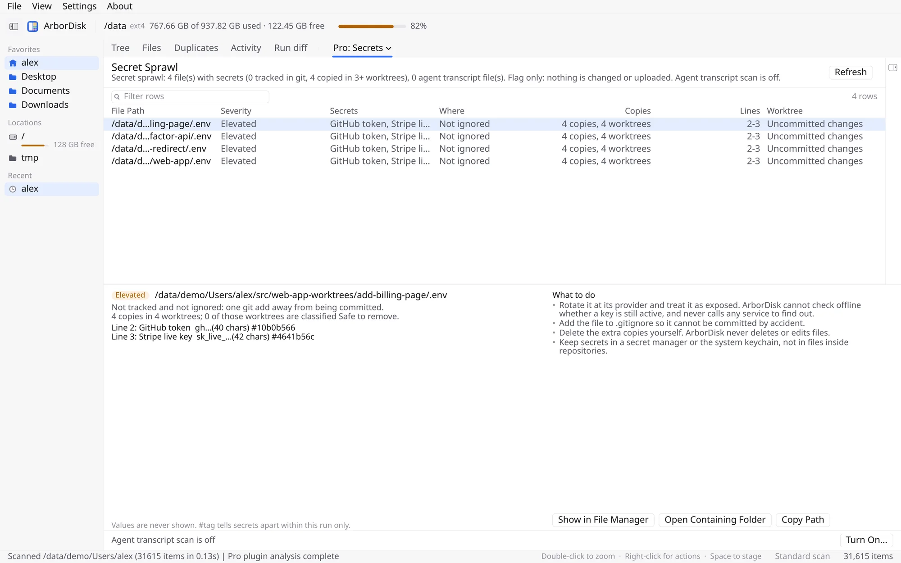
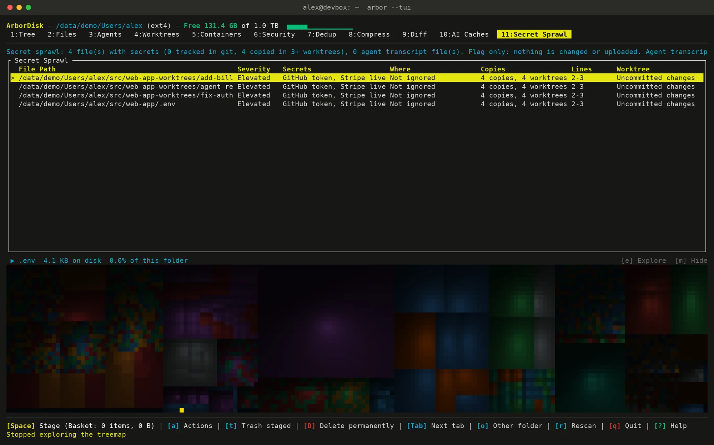
Show reclaimable space on the map Pro
Press P to turn on the Pro overlay. It hatches what the Pro tabs found on the tiles: worktrees and caches, container and VM disks, duplicate copies, compressible files, security findings and AI caches.
- Click a category in the legend to show or hide it.
- Point at a tile to see the finding and its reclaimable size.
- Right-click or Option-click a tile to show its row in the Pro tab.
- Choose the Reclaimable color mode to color each tile by how much you can get back. ArborDisk counts each byte once.
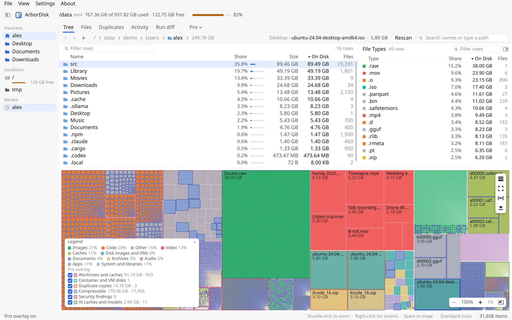
See what is using a file Pro
A file that a program holds open can block a cleanup.
- Right-click a file or folder.
- Choose What's Using This?….
- Read the list of processes and the files they have open.
- Click End Process to stop one, and confirm.
- Click Force End if it does not quit. Unsaved work in it is lost.
Windows reports open files only. A program that uses a folder as its current folder does not show. For a large folder, ArborDisk checks the files nearest the top.
Terminal UI
Use the terminal UI on a server, over SSH, or when you prefer the keyboard. It has the treemap, the tables, the Pro tabs and the disk watcher.
Start the terminal UI
arbor --tui # scan the current folder
arbor --tui ~/src # scan a folder
arbor -t /dataArborDisk scans the folder first, then opens the terminal UI. Pro tabs fill in while their checks run in the background. When the output is not a terminal, ArborDisk prints a summary.
While the terminal UI is open, it watches the drive of the folder. The header shows free space, the trend, the time until full and a small graph.
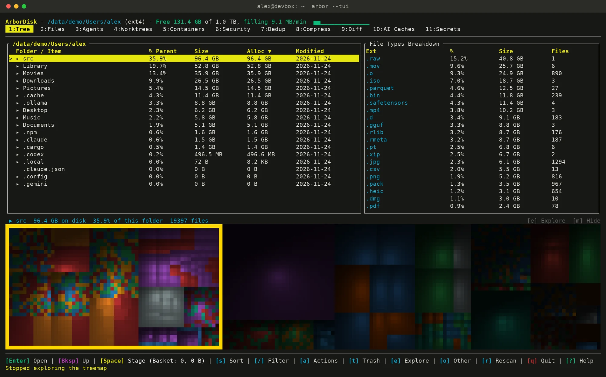
Move between tabs
Press Tab and Shift+Tab, or a number key. You can also click a tab.
- 1 Tree: folders and files by size, with the treemap.
- 2 Files/Dups: the largest files.
- AI Agents: shows while the watcher runs. It takes position 3 and moves the next tabs up by one.
- Worktrees & Bloat, Containers/VMs and Security & Compress Pro.
- More Pro tabs follow: Dedup, Compress, Diff, AI Caches and Secrets.
On a narrow terminal, the tab bar uses short names.
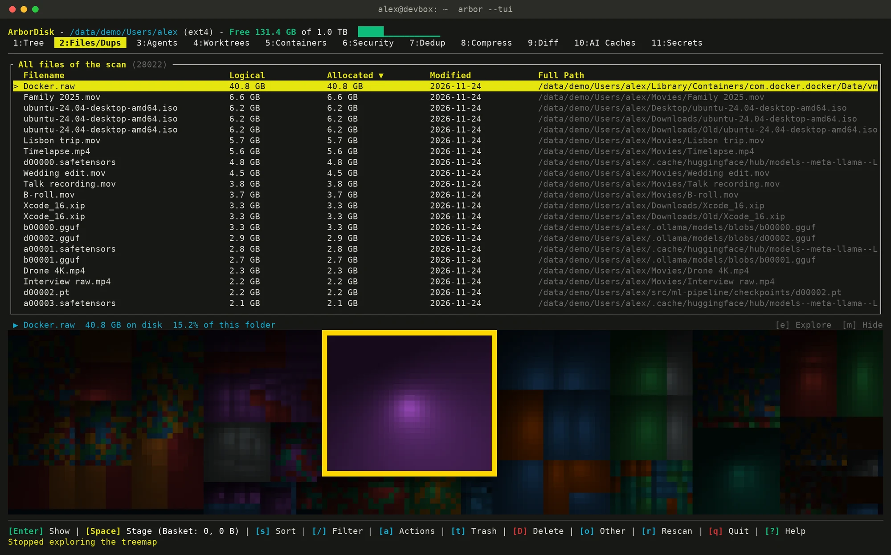
Use the keys
Press ? to see all keys. Press any key to close the help.
| Key | Action |
|---|---|
| j/k, Up/Down | Move the selection |
| PageUp/PageDown | Move one page |
| Home/End | First or last row |
| Enter, Right, l | Open the folder |
| Backspace, Left, h | Up one folder |
| Tab, Shift+Tab | Next or previous tab |
| 1 to 9, 0 | Jump to a tab (0 is tab 10) |
| s | Sort the list |
| / | Filter by name |
| e | Explore the treemap |
| f | File types on or off |
| m | Treemap on or off |
| o | Open another folder |
| r, F5 | Rescan the folder |
| Space | Stage or unstage |
| a | Actions menu |
| x | X-Ray (Containers tab) |
| t | Move staged items to the Trash |
| D | Delete staged items for good |
| y | Confirm Trash or Delete |
| n, Esc | Cancel a popup |
| c | Connect AI agents |
| s (in the c popup) | Cleanup reminder |
| ! | Alerts: dismiss, snooze |
| p, u, U | Pause an agent, resume it, resume all (AI Agents tab) |
| A | Agent auto-pause on or off (AI Agents tab) |
| N | Notifications on or off (AI Agents tab) |
| z | Snooze alerts for 1 hour (AI Agents tab) |
| Mouse | Select, open, scroll |
| ? | Show the help |
| q, Esc | Quit |
| Any key | Close the help |
Click a tab, a row, a folder in the path or a treemap block to select it. Double-click a folder to open it. The wheel scrolls. A click never stages and never runs an action.
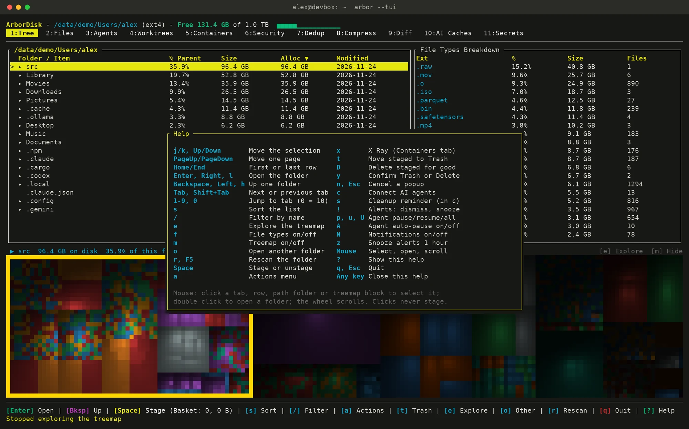
Explore the treemap
- Press e.
- Use the arrow keys, or h, j, k and l, to move between blocks.
- Press e or Esc to stop.
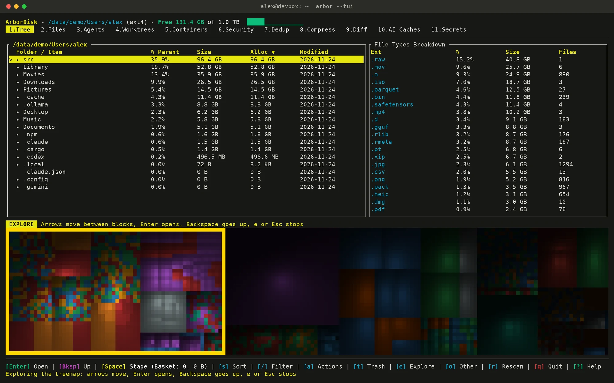
Filter and sort
- Press / and type part of a name. You can use
*and?as wildcards. Folders stay when something inside matches. Press Enter to keep the filter. Press Ctrl+U to clear the text. - Press s to sort by size on disk, size, name or modified time, or to reverse the order.
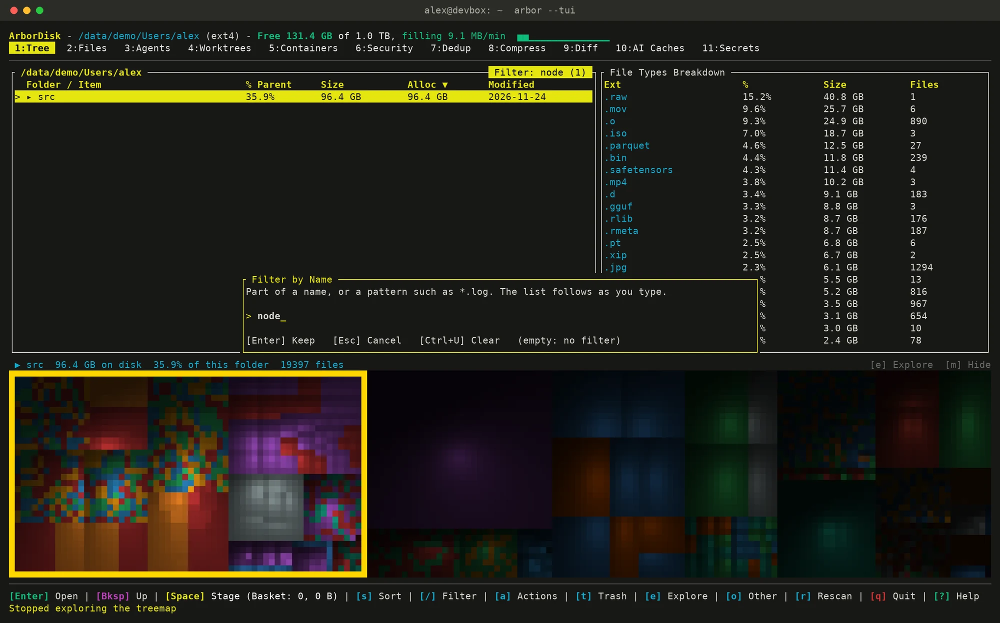
Stage items and remove them
- Select an item and press Space to stage it. Space is the only way to stage.
- Press t to move the staged items to the Trash, or D to delete them for good.
- Read the popup. It lists the count, the size and the names.
- Press y to confirm. Enter never confirms. ArborDisk ignores a y that you typed before the popup opened.
- Read the results. Failed items stay staged.
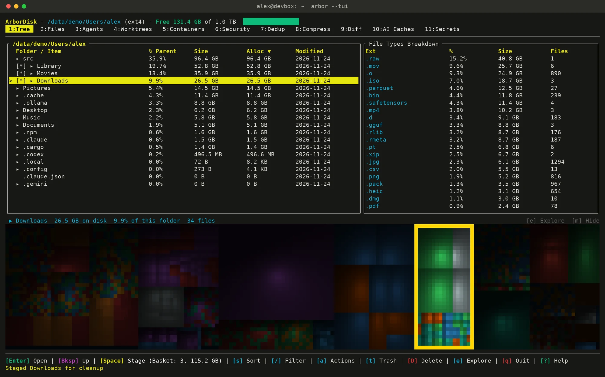
Run actions
Press a to open the Actions menu of the tab. It lists the actions of the Pro tab for the selected rows, Move to Trash, Delete Permanently and, on Linux, Empty Trash. Press j and k to pick one and Enter to open its confirmation. Only y runs it.
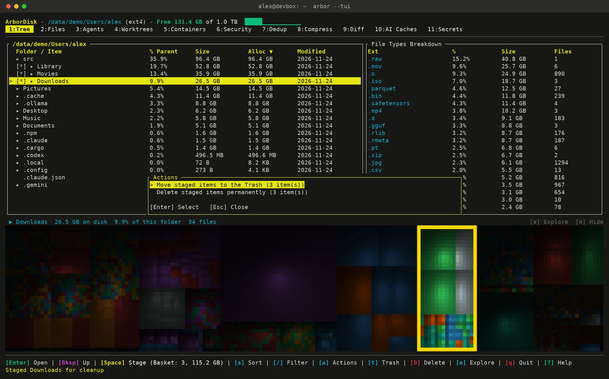
X-Ray a container engine Pro
- Open the Containers/VMs tab.
- Select an engine row, one of its category rows or a disk image row.
- Press x. Press Esc to cancel while it reads.
- Press j and k to pick a cleanup. Press PgUp and PgDn to scroll.
- Press Enter. The confirmation lists what goes, how much it frees and the exact command.
- Press y to run it, or n to cancel.
The terminal UI never removes volumes. A blocked cleanup tells you why and what to use. After a cleanup, ArborDisk reads the engine again.
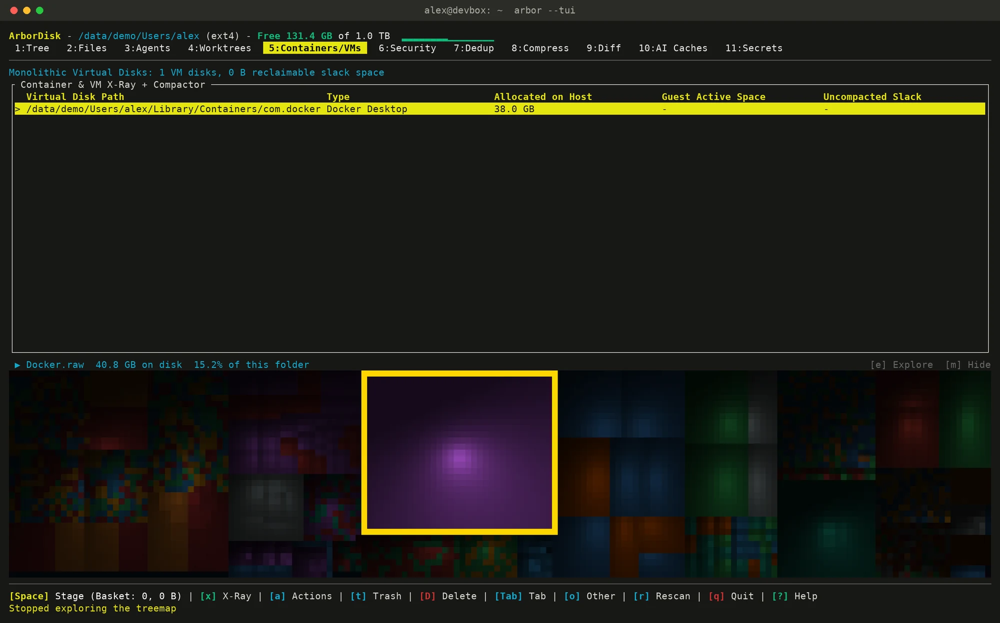
Read and snooze alerts
When the watcher raises an alert, a banner shows under the header. The terminal rings the bell and sets the window title.
- Press ! to open the alerts list. Press x to dismiss an alert, z to snooze all alerts for 1 hour, and Esc to close.
- On the AI Agents tab, press z to snooze and N to turn desktop notifications on or off.
See Know when you get an alert for the alert levels.
Pause and resume agents
The AI Agents tab lists the coding agents that write to the drive. On Linux, it also shows how fast each one writes.
- Press p to pause the selected agent. Press y to confirm.
- Press u to resume it, or U to resume all agents.
- Press A to turn auto-pause on or off. See Stop an agent before the disk fills.
When you quit the terminal UI, it resumes every agent it paused.
Connect agents from the terminal UI
- Press c.
- Press j and k to pick an agent.
- Press c or Enter to preview a connect. Press d to preview a disconnect.
- Press s to add the cleanup reminder to the next connect (Claude Code and Codex only).
- Press y to write the change, or n to cancel.
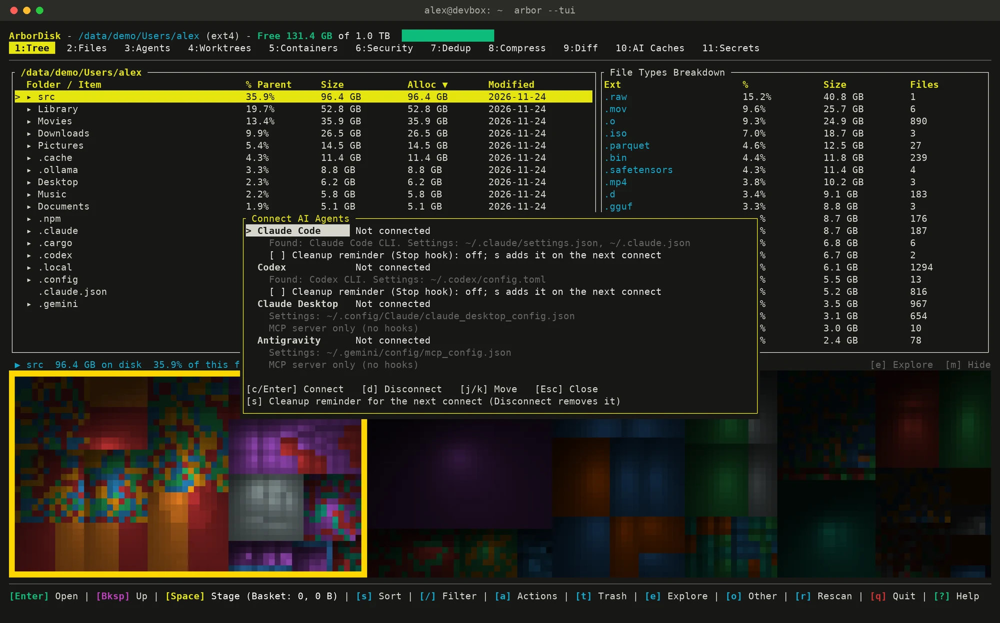
Use it over SSH
In an SSH session, arbor opens the terminal UI on its own. You do not need --tui. Use a terminal with true color for the best treemap.
Watch the disk and get alerts
Use the watcher while coding agents run. It tracks free space, inodes, the fill rate and which claude, codex or aider process writes. The terminal UI runs the same watcher.
Run the watcher
arbor watch [FOLDER] [--interval SECS] [--once] [--json] [--auto-pause] [--notify bell|desktop|none]| Option | What it does |
|---|---|
FOLDER | Watch the drive of this folder. The default is the current folder. |
--interval SECS | Seconds between samples, 1 to 60. The default is 10. |
--once | Take two samples, print the status and exit. There is no trend from two samples. |
--json | Print one JSON object per event: start, alert, clear, status, stop. |
--auto-pause | Turn on the emergency brake for this run. |
--notify | bell, desktop or none. The default is the saved setting. |
The watcher prints a line when it starts and for each alert raised or cleared. It rings the bell, sets the window title, and shows the alert on the tmux status line in tmux or byobu. Press Ctrl+C to stop it.
Exit codes of --once: 0 no alert, 1 warning, 2 critical, 3 error.
A running watcher writes watch-status.json to the ArborDisk support folder after each sample. Status line tools read it.
Know when you get an alert
The watcher samples the drive every 10 seconds. It raises an alert when:
- Free space is low: under 5 GB, critical under 1 GB.
- The disk will be full soon: within 30 minutes, critical within 15.
- Free space falls fast: 2 GB/min or more for 2 minutes.
- Fewer than 5% of the inodes are free.
- One agent keeps writing 2 GB/min or more.
- A repository of a running agent is at or over its worktree limit. This is an info alert without a bell.
When you changed the alert levels in the window, the watcher uses them. Each alert names the largest writer and says what to do. When a warning turns critical, the watcher announces it again, once.
Per-agent write rates are Linux only. ArborDisk reads /proc/<pid>/io of your own processes. On macOS and Windows, and for agents of other users, it lists agents without a rate.
Get notifications
--notify bell: the terminal bell, the window title and the tmux status line.--notify desktop: also a desktop notification. Through tmux or screen it sends an OSC 777 or OSC 9 escape. tmux needsset -g allow-passthrough on. With a desktop session, it also usesnotify-send.--notify none: print only.
An alert rings once per raise, at most every 15 minutes per alert, with at least one minute between any two.
Stop an agent before the disk fills
The emergency brake is off by default. Turn it on with --auto-pause, or press A in the terminal UI.
With the brake on, ArborDisk acts when the disk would be full within 5 minutes. It also acts when the disk has under 1 GB free and still fills. It then pauses the agent that writes the most. The agent must cause at least half of the fill rate, or write faster than the runaway rate. A critical alert says what ArborDisk paused and how to resume it.
ArborDisk never pauses itself, the programs that started it, or an agent you resumed. It never resumes an agent by itself. To resume:
- Press u in the terminal UI.
- Run
arbor resumein another window. - Stop the watcher. It resumes everything it paused.
Get alerts on your phone
The watcher can send alerts to a webhook on a server you run, such as Gotify or Home Assistant. Nothing goes out until you save a URL. There is no default address.
arbor alerts # on or off, host and port, level
arbor alerts webhook <URL> [--header "Name: value"]... [--min-level warning|critical]
arbor alerts test # send one test alert; exit 1 when not delivered
arbor alerts off # remove the webhook- Set up an endpoint on your server.
- Run
arbor alerts webhookwith its URL. - Run
arbor alerts test. - Check that the test alert reaches your phone.
Gotify:
arbor alerts webhook "https://gotify.example.lan/message?token=<app token>"Home Assistant: use an automation with a Webhook trigger and the fields {{ trigger.json.title }} and {{ trigger.json.message }}.
arbor alerts webhook "http://homeassistant.local:8123/api/webhook/<webhook id>"ArborDisk sends one POST with Content-Type: application/json:
{"source":"ArborDisk","title":"Disk full in 14 min","message":"/data is filling at 2.1 GB/min. ...","priority":8,"level":"critical","key":"full:/data","host":"devbox","time":"2026-11-21T18:02:11Z","test":false}priorityis 8 for critical and 5 for warning. Gotify readstitle,messageandpriorityas they are.testistrueforarbor alerts test.- Use
--headerfor a token that you do not want in the URL. You can repeat it.
ArborDisk sends an alert at or above --min-level (warning by default), with the same limits as the bell. Snoozed alerts wait. The terminal UI and arbor watch both send. arbor watch --once never sends.
ArborDisk sends with the system curl. It ignores ~/.curlrc and proxy variables, accepts only http and https, stops after 10 seconds and never follows a redirect. Only a 2xx answer counts as delivered.
The settings are in alert-webhook.json in the ArborDisk support folder, readable by you only. arbor alerts shows only the scheme, host and port.
Use https:// for a server that is not on your private network. ArborDisk warns when an http:// URL goes to a public address. What reaches your phone, and through which push service, depends on your server and its app.
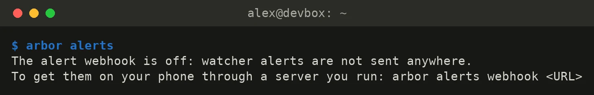
Coding agents
Coding agents fill disks with builds, worktrees and caches. ArborDisk can warn them, stop builds when space is low, and answer their questions about disk use. The agent interface is read-only. It never moves, trashes or deletes anything.
Connect your agents
ArborDisk finds Claude Code, Claude Desktop, Codex and Antigravity on this computer.
- Open Settings, AI Agents, and click Connect AI Agents…. On macOS, this is also in the ArborDisk menu.
- Find your agent in the list.
- Click Connect….
- Read the preview of the changes.
- Click Back Up and Connect.
- Restart the agent.
From a terminal:
arbor connect scan # what is installed and connected
arbor connect # connect every agent found (preview, then y/N)
arbor connect codex antigravity # only these
arbor connect claude --stop-hook # also add the cleanup reminder
arbor disconnect claude-desktop # remove what ArborDisk added| Agent | Settings file | What ArborDisk adds |
|---|---|---|
claude (Claude Code) | ~/.claude/settings.json, ~/.claude.json | Disk guard hooks and the MCP server |
codex (Codex CLI and app) | ~/.codex/config.toml | Disk guard hooks and the MCP server |
claude-desktop | claude_desktop_config.json | The MCP server |
antigravity (agy) | ~/.gemini/config/mcp_config.json | The MCP server |
ArborDisk backs up each file next to itself before it writes. It never writes a file that does not parse. arbor disconnect removes only what ArborDisk added.
Codex runs a new hook only after you trust it. Run /hooks in Codex and approve the ArborDisk hooks. Connect from an installed copy of ArborDisk, not from a build folder.
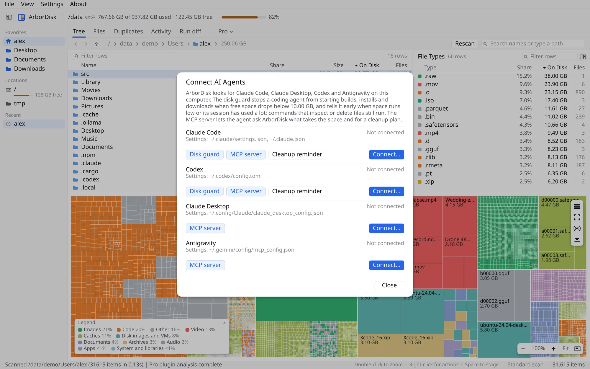
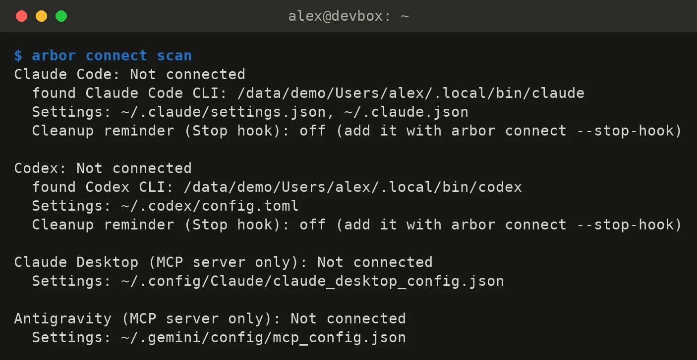
Know what the hooks do
Each hook reads free space with one system call. It does not scan. It prints nothing while space is healthy and never fails. The default minimum is 10 GiB. The warning level is twice the minimum.
| Event | What the hook does |
|---|---|
PreToolUse | Below the minimum, it denies commands that build, install or download. It gives two or three ways to free space. Below the warning level, the command runs and the agent gets one line of advice. Commands that inspect or delete files always run. It also refuses a new git worktree when the repository is at its limit. |
SessionStart | Records the free space at the start of the session. Adds one line only below the warning level. |
UserPromptSubmit | Adds one line only below the warning level. |
PostToolUse | Tells the agent once when free space fell by another 5 GB since the session started. |
Stop (opt-in) | The cleanup reminder. See below. |
The hooks never answer "allow", so your own permission rules still apply. Each hook has a 10 second timeout.
Ask agents to clean up
The cleanup reminder is a Stop hook. It is off by default. When free space fell by more than 2 GB since the session started, it stops the agent from finishing once. It asks the agent to remove what it made and no longer needs: build output in throwaway worktrees, merged and clean worktrees, Docker images and build cache it made, and temporary files. It never asks for Docker volumes or other people's work.
- Window: turn on Cleanup reminder in Connect AI Agents.
- Terminal UI: press s in the c popup.
- Command line:
arbor connect claude --stop-hook.
Show free space in tmux, byobu or screen
arbor check --status-line /data # "disk 455G", "disk 4.2G low", "disk 1.1G FULL SOON"
arbor check --status-line /data --format tmux # the same with tmux colors
arbor check --status-line /data --setup tmux # print the lines for ~/.tmux.conf
arbor check --status-line /data --setup tmux --install
arbor check --status-line /data --setup byobu --install
arbor check --status-line /data --setup screen # print the lines for ~/.screenrc- FULL SOON shows below
--min-free(default 10 GB). low shows below twice that. The same applies under 5% and 10% free inodes. - While a watcher runs, the line adds the trend, the time until full and the top alert.
--installbacks up each file first and changes nothing when you run it again.- To undo in tmux, remove the block between
# >>> arbordisk status line >>>and# <<< arbordisk status line <<<. In byobu, delete the script10_arbordisk.
The line takes well under 20 ms, always prints one line and always exits 0.
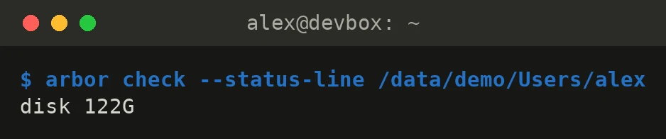
Limit git worktrees
Agents make git worktrees and forget them. ArborDisk counts the linked worktrees of each repository. At the limit, the hooks refuse a new worktree from an agent. ArborDisk never removes a worktree by itself.
arbor worktrees [PATH] [--json] # count, limit and every worktree
arbor worktrees --limit N|off|default [--repo PATH] # the default limit, or one repository's
arbor worktrees --stale-days N # idle days before a removable one is stale
arbor worktrees --prune [PATH] [--older-than DAYS] [--yes] [--json]- The default limit is 10 per repository.
--limit offturns the check off. - States:
stale,removable,dirty,unpushed,not merged,locked,in use,unknown. - Removable means merged into the default branch, clean, pushed, not locked and not in use. Stale means removable and idle for 7 days (
--stale-days). --pruneremoves stale worktrees only, withgit worktree remove. It never forces and never deletes a branch. It asks[y/N]first.
Exit codes: 0 all under the limit, 1 one at or over the limit, 2 usage error, 3 error. With --prune: 0 done or nothing to do, 1 preview only, 3 a removal failed.
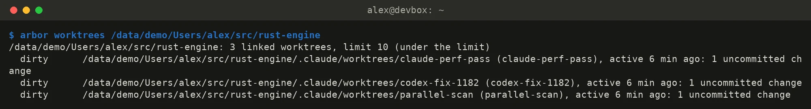
Pause an agent from a terminal
arbor pause [PATH] [--yes] # pause the coding agents working in PATH
arbor resume # resume what arbor pause or arbor watch paused- Run
arbor pausein the folder of the agent. - Read the list of agents and their process IDs.
- Answer
yto pause them. - Run
arbor resumewhen you want them to continue.
Record each agent session
Add these hooks to .claude/settings.json to record a run for each Claude Code session. arbor connect does not add them. The cleanup reminder then lists the folders that the session made grow.
{
"hooks": {
"SessionStart": [
{ "matcher": "startup|resume|clear",
"hooks": [ { "type": "command", "command": "arbor mark start --hook", "async": true } ] }
],
"Stop": [
{ "hooks": [ { "type": "command", "command": "arbor mark end --hook", "async": true } ] }
],
"SessionEnd": [
{ "hooks": [ { "type": "command", "command": "arbor mark end --hook --min-interval 0", "timeout": 60 } ] }
]
}
}The hooks print nothing and always exit 0. The window setting Record agent runs does a similar job while the window is open.
Register the MCP server by hand
arbor mcp is an MCP server on stdio. Use the full path of the program. For the macOS app, the path is /Applications/ArborDisk.app/Contents/MacOS/ArborDisk.
Claude Code:
claude mcp add arbor -- /path/to/arbor mcpCodex (codex mcp add arbor -- /path/to/arbor mcp, or in ~/.codex/config.toml):
[mcp_servers.arbor]
command = "/path/to/arbor"
args = ["mcp"]Cursor (~/.cursor/mcp.json, or .cursor/mcp.json in a project):
{ "mcpServers": { "arbor": { "command": "/path/to/arbor", "args": ["mcp"] } } }Use the MCP tools
Every tool is read-only. Sizes accept bytes or a unit: KB, MB, GB and TB are decimal; KiB, MiB, GiB and TiB are binary. Scans stay cached for 5 minutes. A slow scan returns partial: true and continues in the background.
| Tool | Tier | What it returns |
|---|---|---|
disk_free | Free | Total, free and used space and inodes per volume. No scan. |
check_space | Free | ok, warn or fail for a planned write of a given size. No scan. |
largest_items | Free | The largest files and folders under a path. |
folder_summary | Free | Size, counts, top extensions, file categories and largest children. |
run_diff_list | Free | Recorded runs, newest first. |
run_diff_get | Free | What one recorded run changed on disk. |
worktree_limits | Free | The worktree count, limit and states of one repository. |
reclaimable_summary | Pro | Reclaimable bytes per category, each byte counted once. |
pro_findings | Pro | The rows of any Pro tab. |
worktree_status | Pro | The rows of the Worktrees tab. |
cleanup_plan | Pro | Ranked suggestions with bytes, risk and the step to take in the app. It runs nothing. |
container_usage | Pro | Container engines and VM disk images with reclaimable space. |
duplicates | Pro | Verified duplicate groups and wasted bytes. |
Without a license, a Pro tool returns an error that starts with "requires ArborDisk Pro".
Command line reference
Run arbor --help to see every command. Without a subcommand, arbor opens the desktop window, or the terminal UI in an SSH session.
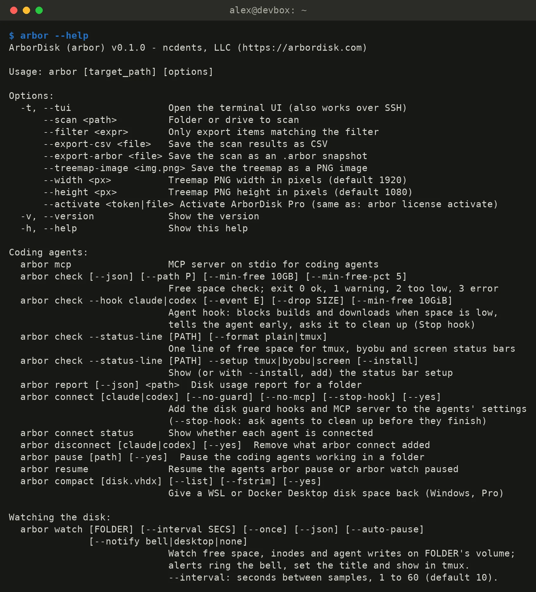
Scan and export from a terminal
arbor [target_path] [options]| Option | What it does |
|---|---|
-t, --tui | Open the terminal UI. |
--scan <path> | The folder or drive to scan. |
--export-csv <file> | Save the scan results as CSV. |
--export-arbor <file> | Save the scan as an .arbor snapshot. |
--treemap-image <img.png> | Save the treemap as a PNG image. |
--width <px>, --height <px> | Size of the PNG. The default is 1920 by 1080. |
--filter <expr> | Export only the items that match, for example *.log. A matched folder keeps all its contents. The folders above a match stay, with sizes of only what matched. |
--activate <token|file> | Activate ArborDisk Pro. |
-v, --version | Show the version. |
-h, --help | Show the help. |
An export option scans without a window and exits. The older flags /export=, /treemapimage= and /filter= still work.
arbor ~/src --export-csv src.csv
arbor ~/src --treemap-image src.png --width 2560 --height 1440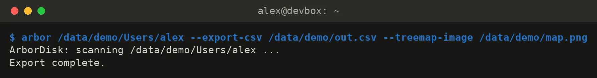
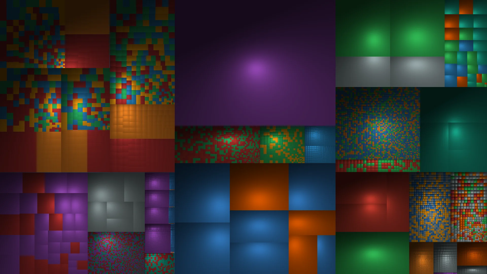
Check free space with arbor check
arbor check [--json] [--path P]... [--all] [--min-free 10GB] [--min-free-pct 5] [--warn-free SIZE] [--warn-free-pct N]
arbor check --hook claude|codex [--event E] [--drop SIZE] [--min-free 10GiB]
arbor check --status-line [PATH...] [--format plain|tmux] [--min-free 10GB]
arbor check --status-line [PATH] --setup tmux|byobu|screen [--install]arbor check reads the free space of the volume of each path. It does not scan. The default path is the current folder. --all checks every volume.
- A volume fails below
--min-free(default 10 GB) or--min-free-pct(default 5), or when fewer than 5% of its inodes are free. - It warns below
--warn-freeand--warn-free-pct. The defaults are twice the minimums, and 10% of inodes.
| Exit code | Meaning |
|---|---|
0 | OK |
1 | Warning |
2 | Too low (fail) |
3 | Error: bad arguments or a path it cannot read |
For --hook, see Know what the hooks do. For --status-line, see Show free space in tmux, byobu or screen.
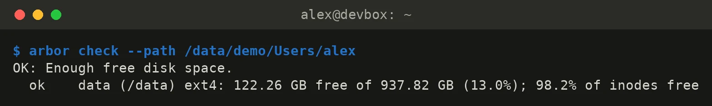
Report on a folder with arbor report
arbor report [--json] [--max-seconds 120] <path>
arbor mcparbor report scans one folder and prints its disk use. With a Pro license, it adds the reclaimable summary and the cleanup plan. It exits 0, or 3 on error.
arbor mcp starts the MCP server on stdio. See Register the MCP server by hand.
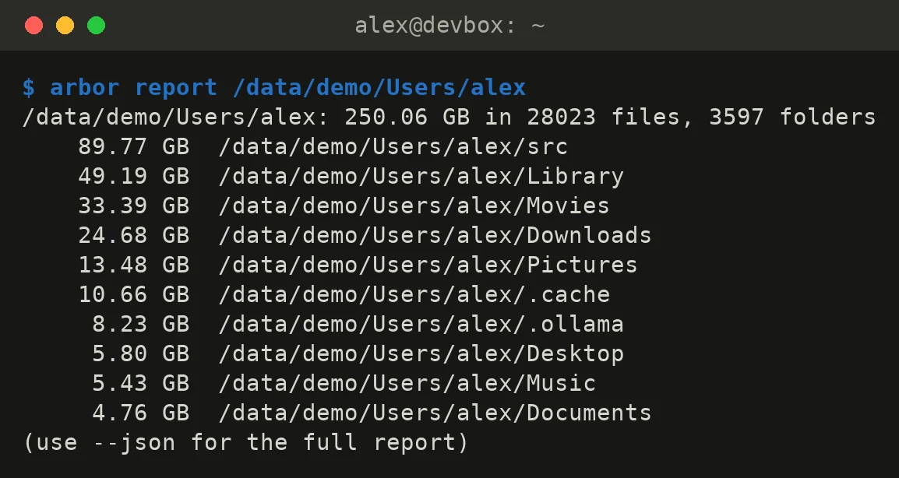
Connect, pause and compact
arbor connect [claude|codex|claude-desktop|antigravity] [--no-guard] [--no-mcp] [--stop-hook] [--yes]
arbor connect status # same as: arbor connect scan
arbor disconnect [AGENT] [--yes]
arbor pause [PATH] [--yes]
arbor resume
arbor compact [disk.vhdx] [--list] [--fstrim] [--yes]--no-guardskips the disk guard hooks.--no-mcpskips the MCP server.--stop-hookadds the cleanup reminder.--yesskips the question.arbor compactmakes a WSL or Docker Desktop disk file smaller Pro. Without a path, or with--list, it lists the disks.--fstrimreleases freed blocks in the WSL distro first. It shuts down WSL and asks first.
arbor compact is Windows only. On macOS and Linux it says that compaction is not needed.
Watch and send alerts
arbor watch [FOLDER] [--interval SECS] [--once] [--json] [--auto-pause] [--notify bell|desktop|none]
arbor alerts
arbor alerts webhook <URL> [--header "Name: value"]... [--min-level warning|critical]
arbor alerts test
arbor alerts offSee Run the watcher and Get alerts on your phone.
Manage worktrees with arbor worktrees
arbor worktrees [PATH] [--json]
arbor worktrees --limit N|off|default [--repo PATH]
arbor worktrees --stale-days N
arbor worktrees --prune [PATH] [--older-than DAYS] [--yes] [--json]See Limit git worktrees.
Free up space with arbor free-up
arbor free-up [--path P] [--json] [--yes] [--pick N,M,... | --pick PATH]...
arbor free-up --empty-trash [--yes] [--json]- Run
arbor free-upto list what you can clean up on the volume ofP. - Read the ranked list.
- Run it again with
--pickand the numbers or paths of the items you want. - Answer
yto move them to the Trash or Recycle Bin.
--pickmoves only temporary files and items that recorded runs left behind.- For other rows, the list names the window action that does the job. With Pro, container engines show the exact cleanup commands their X-Ray runs. Nothing runs from
arbor free-up. - With
--yes, give each pick as a path. Each run scans again, so a number can point to another item. --empty-trashempties the Trash on Linux after it shows what it frees.
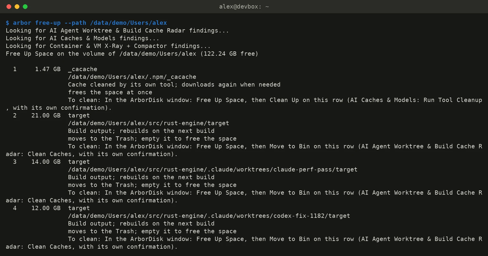
Record runs with arbor mark
arbor mark start [--name NAME] [--path P...] [--max-seconds S] [--restart] [--no-caches] [--json] [--quiet] [--hook]
arbor mark end [--name NAME] [--max-seconds S] [--min-interval S] [--json] [--quiet] [--hook]
arbor mark list [--json]
arbor mark show [NAME|ID|latest] [--json | --md]- Run
arbor mark startbefore a job. - Run the job.
- Run
arbor mark end. - Run
arbor mark showto see what changed.
- A mark measures the paths of
--path(default the current folder), temp folders, caches, AI caches and the Docker Desktop disk image. --no-cachesmeasures only the repository, temp and Docker. It is faster.arbor mark endwithout--nameends the newest open run.--hookreads the session ID and folder from the hook input and prints nothing.- ArborDisk keeps at most 50 runs, 32 MB and 90 days.
The window shows the same runs in the Run diff tab.
Manage the license with arbor license
arbor license activate <ARCERT token | .arcert file> [--json]
arbor license status [--json]
arbor license deactivate [--json]See License.
Set environment variables
| Variable | What it does |
|---|---|
ARBOR_LICENSE | The license certificate as text. |
ARBOR_LICENSE_FILE | The path of a license file. |
ARBOR_SUPPORT_DIR | Moves the support folder for run marks and agent session marks. |
ARBOR_THEME | Sets the window appearance. |
ARBOR_NATIVE_ENGINES=0 | Stops the Containers tab from asking Docker Engine and Podman on Linux. |
ARBOR_WORKTREE_GH=1 | Lets the worktree analysis ask the GitHub CLI for pull requests. Off by default. |
ARBOR_WORKTREE_NETWORK=1 | Lets the worktree analysis run git ls-remote. |
ARBOR_MCP_CACHE_TTL_SECS | How long the MCP server keeps a scan. The default is 300. |
License
The Tree, Files, Duplicates, Activity and Run diff tabs are free. ArborDisk Pro adds the eight Pro tabs, the Pro overlay, What's Using This?, Show Changes in Live Activity and the Pro agent tools.
Activate ArborDisk Pro
Your license is an ARCERT-… certificate for this computer. ArborDisk checks it on this computer. Nothing is sent.
In the window:
- Open Settings, License, and click Enter License…. You can also click Activate… on a Pro tab.
- Click Paste to paste the certificate, or click Choose File… to pick the
.arcertfile. - Click Activate.
In a terminal:
arbor license activate ARCERT-eyJ...
arbor license activate ~/Downloads/license.arcert
arbor --activate ARCERT-eyJ... # the sameArborDisk checks the signature, the computer and the entitlements. Then it stores the certificate as license.arcert next to its settings. It prints the licensee, the plan, the Pro features, the end of the updates window and the computer. It refuses a certificate that is damaged, has a bad signature, or is for another computer.
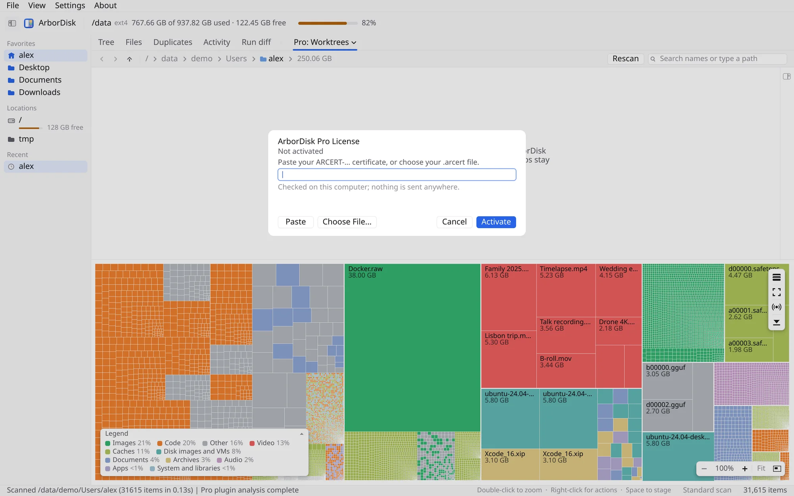
Check or remove your license
arbor license statusshows what is active and where it came from.arbor license deactivate, or Deactivate in Settings, moves the stored license to the Trash.
The license folder is ~/Library/Application Support/ArborDisk on macOS, %APPDATA%\ArborDisk on Windows and $XDG_CONFIG_HOME/arbordisk on Linux.
Know where ArborDisk looks for a license
- The
ARBOR_LICENSEenvironment variable. - The file named by
ARBOR_LICENSE_FILE. - The stored
license.arcert.
The first match wins. A source that is present but not valid does not fall through to the next one. arbor license status reports it. The window, arbor mcp, arbor check and arbor report use the same lookup, so you activate once.
Know the updates window and seats
A license does not expire. It includes an updates window. After the window ends, the license keeps working with versions released before that date. arbor license status then says "updates ended".
You can use one Pro license on up to 5 computers. Each computer gets its own certificate.
Privacy
ArborDisk runs offline. It has no telemetry and needs no account. License checks happen on your computer. Scans, saved scans, run marks and settings stay on your computer.
Know which network calls can happen
- Your webhook: only when you save a URL with
arbor alerts webhook. The request goes to your URL only. - GitHub pull requests: only when you set
ARBOR_WORKTREE_GH=1. The worktree analysis then runsgh pr listwith your signed-in GitHub CLI. - git ls-remote: only when you set
ARBOR_WORKTREE_NETWORK=1. - Engine and tool commands: container engine cleanups and AI tool cleanups run only after you confirm them.
- Help: the Help menu opens the ArborDisk website in your browser.
The transcript secret scan is off by default. When you turn it on, ArborDisk reads session files on this computer and keeps only paths, line numbers, kinds and counts in memory.
© 2026 ncdents, LLC. Questions: sales@arbordisk.com.